254 — Patching, imágenes doradas y gestión de configuración
Parte: 21 — Operación cloud, automatización y respuesta a incidentes
Nivel: avanzado · Horas estimadas: 4
Laboratorio: operations · Estado: EXECUTABLE_CORE
🎯 Propósito
Mantener al día lo que existe, que es donde se acumula la mayor parte del riesgo operativo y del trabajo repetitivo. La clase explica por qué el parcheo tradicional fracasa y qué lo sustituye —sustituir en vez de arreglar—, cómo se construyen imágenes base que no envejecen, y qué hacer con lo que no se puede sustituir: la gestión de configuración, con su alcance real y sus límites.
📚 Resultados de aprendizaje
Al finalizar podrás:
- Sustituir en lugar de parchear donde el sistema lo permita.
- Construir y renovar imágenes base con procedencia y verificación.
- Priorizar vulnerabilidades por alcance y por explotación real.
- Aplicar gestión de configuración donde la sustitución no llega.
- Medir la antigüedad de lo desplegado y actuar sobre ella.
🧩 Conceptos centrales
| Concepto | Comprensión verificable |
|---|---|
infraestructura inmutable |
No se modifica lo desplegado: se sustituye por una versión nueva. |
imagen base |
Punto de partida común de las cargas. Su renovación es lo que aplica los parches a todo. |
antigüedad de lo desplegado |
Tiempo desde que se construyó lo que está corriendo. La medida que resume el estado del parcheo. |
material de composición |
Lista de lo que contiene un artefacto. Permite saber qué está afectado por una vulnerabilidad. |
explotación conocida |
Que exista un ataque real usando esa vulnerabilidad. Cambia la prioridad más que la gravedad teórica. |
gestión de configuración |
Aplicar y mantener un estado declarado sobre sistemas que no se sustituyen. |
🧠 Modelo mental
Operar es controlar cambios bajo incertidumbre: inventario, señal, diagnóstico, acción reversible y aprendizaje deben formar un ciclo cerrado.
Aplicado a esta clase, separa siempre cuatro planos: intención (qué necesita el usuario), configuración (qué declaramos), estado observado (qué existe de verdad) y evidencia (cómo sabemos que cumple). Confundirlos produce diseños que se ven correctos en un diagrama pero fallan al operar.
🗺️ Flujo de razonamiento

📖 Desarrollo
1. Sustituir en vez de arreglar
El parcheo tradicional —conectarse a un sistema y actualizarlo— falla por razones estructurales.
POR QUÉ FALLA
cada sistema acaba en un estado distinto
→ «funciona en el servidor 3 y no en el 7»
un parche que rompe algo deja el sistema a medias
el que estaba apagado no se parchea
el que se creó ayer parte de una imagen vieja
y nadie sabe qué versión hay dónde
→ y el resultado es un conjunto de sistemas únicos que
nadie puede reproducir clase 253
La alternativa, que es la que este programa usa desde la parte 05:
NO SE MODIFICA LO DESPLEGADO: SE SUSTITUYE
la imagen base se renueva
las cargas se reconstruyen sobre ella
y se despliegan escalonadamente clase 102
→ y así el parcheo deja de ser una operación aparte y pasa
a ser un despliegue más
→ con su reversión, sus comprobaciones y su escalonado
Y lo que hace falta para que funcione:
1 QUE NADA IMPORTANTE VIVA EN EL SISTEMA
estado en almacenes y bases, no en discos locales
→ y si algo tiene estado local, no se puede sustituir
sin más clase 149
2 QUE RECONSTRUIR SEA BARATO Y AUTOMÁTICO
→ si construir una imagen tarda dos horas y se hace a
mano, no se renovará ley 16
3 QUE EL DESPLIEGUE SEA SEGURO
escalonado, con comprobaciones y reversión
clases 212, 233
4 Y QUE LA RENOVACIÓN ESTÉ PROGRAMADA
→ «cuando haya una vulnerabilidad» significa nunca
→ cada dos o cuatro semanas, pase lo que pase
La medida que resume todo esto:
ANTIGÜEDAD DE LO DESPLEGADO
¿cuánto hace que se construyó lo que está corriendo?
→ si el p95 es de 15 días, el parcheo funciona
→ si es de 8 meses, no funciona, digan lo que digan los
informes de cumplimiento
y es mejor medida que «porcentaje de parches aplicados»
→ porque no depende de qué se considere un parche
→ y porque es una sola cifra que todo el mundo entiende
ley 17
Y la alerta que corresponde:
«esta carga lleva más de N días sin reconstruirse»
→ y es una alerta de antigüedad, como las de la
clase 211 ley 13
→ y cubre lo que ninguna alerta de error cubre: lo que
funciona y está viejo
2. Imágenes base y procedencia
La imagen base es el punto donde se aplica el parcheo a todo lo que la usa.
UNA IMAGEN BASE POR FAMILIA, no una por equipo
→ si cada equipo mantiene la suya, hay veinte imágenes
que renovar ley 23
→ y la mitad no se renuevan
Y LO QUE DEBE TRAER
el sistema mínimo, sin herramientas de más
las bibliotecas comunes, con versión fija
los agentes obligatorios: telemetría, seguridad
la configuración base endurecida
y NADA de secretos clase 212
Y el ciclo de renovación:
1 construcción PROGRAMADA, cada 2-4 semanas
2 exploración de vulnerabilidades
3 pruebas: que arranca, que los agentes reportan, que
pasan las comprobaciones
4 publicación con ETIQUETA INMUTABLE clase 212
5 y las cargas la adoptan en su siguiente despliegue
→ y aquí hay una decisión
¿las cargas se redespliegan solas al haber imagen nueva,
o esperan a su siguiente cambio?
→ si esperan, una carga que no cambia nunca se queda
vieja ley 25
→ lo razonable: redespliegue automático en entornos
inferiores, y programado en producción
La procedencia, que es lo que permite responder a una vulnerabilidad:
MATERIAL DE COMPOSICIÓN
qué contiene cada artefacto: paquetes, bibliotecas,
versiones
generado al construir, no a posteriori
→ y así, ante una vulnerabilidad nueva, la pregunta «¿qué
está afectado?» se responde con una consulta
→ sin él, se responde revisando a mano y se tarda días
Y LA FIRMA
el artefacto se firma al construir y se verifica al
desplegar clase 106
→ y la admisión rechaza lo no firmado clase 234
Y el registro de imágenes, con su higiene:
etiquetas inmutables
exploración CONTINUA, no solo al subir
→ una imagen desplegada hace tres meses puede tener hoy
una vulnerabilidad conocida clase 212
caducidad: las viejas se borran
y alerta: «hay imágenes en producción con vulnerabilidades
graves publicadas después de su construcción»
Y una decisión que se hace mal:
✗ RECONSTRUIR SOLO CUANDO HAY VULNERABILIDAD
→ convierte el parcheo en una urgencia cada vez
→ y la urgencia se hace mal
✓ RECONSTRUIR SIEMPRE, EN CALENDARIO
→ y entonces una vulnerabilidad es «adelantamos la
siguiente construcción», que es un procedimiento
conocido ley 22
3. Priorizar vulnerabilidades
Una exploración produce cientos de hallazgos. Ordenarlos por gravedad teórica es la forma más rápida de trabajar mucho y reducir poco riesgo.
LO QUE ORDENA DE VERDAD, en este orden
1 ¿HAY EXPLOTACIÓN CONOCIDA?
¿existe un ataque real usando esto?
→ hay catálogos públicos de vulnerabilidades explotadas
→ y esas van primero, sea cual sea su gravedad teórica
2 ¿ES ALCANZABLE?
¿el componente vulnerable está expuesto?
¿el código afectado se ejecuta siquiera?
→ una biblioteca incluida y no usada tiene riesgo casi
nulo
3 ¿HASTA DÓNDE SE LLEGA DESDE AHÍ?
el alcance desde el punto comprometido
clases 189, 226
4 ¿CUÁNTOS ARTEFACTOS AFECTA?
→ y aquí el material de composición da la respuesta
5 Y SOLO ENTONCES, la gravedad teórica
Y la consecuencia práctica:
de 400 hallazgos «críticos» de una exploración típica
con explotación conocida entre 5 y 20
alcanzables de verdad menos de la mitad
→ y esos son el trabajo
→ perseguir los 400 consume el trimestre y no reduce el
riesgo tanto como resolver los 12 primeros
clase 226
Y lo que se hace con el resto:
se resuelve en el ciclo normal de renovación
→ la mayoría desaparece sola al reconstruir
y lo que no se puede arreglar se acepta por escrito, con
dueño y fecha clase 189
La cadena de suministro, que es la parte que más ha crecido:
las dependencias de terceros son la mayor superficie
→ y una dependencia trae otras: el árbol es enorme
lo que hay que hacer
fijar las versiones, con fichero de bloqueo
verificar la procedencia de lo que se descarga
usar un repositorio propio que actúe de espejo
→ así una dependencia retirada del origen no rompe la
construcción ley 25
y comprobar que un paquete nuevo no es un nombre
parecido a otro
y lo que no hay que hacer
actualizar todo automáticamente sin pruebas
→ una actualización maliciosa entra igual que una buena
clase 106
Y una advertencia sobre las herramientas:
las exploraciones producen FALSOS POSITIVOS
versiones que el proveedor ha corregido sin cambiar el
número
componentes presentes y no usados
→ y si el equipo pierde la confianza en la herramienta,
deja de mirarla ley 15
→ por eso las exclusiones justificadas son parte del
trabajo, no una trampa
4. Lo que no se puede sustituir
Siempre queda algo: bases de datos, sistemas heredados, dispositivos, equipos de red.
DÓNDE NO LLEGA LA SUSTITUCIÓN
bases de datos con estado grande
→ se actualizan en su sitio, con su procedimiento
sistemas heredados que no se pueden reconstruir
dispositivos y equipos de red clase 203
y estaciones de trabajo
→ y ahí sigue haciendo falta gestión de configuración
Cómo se hace bien:
ESTADO DECLARADO Y RECONCILIACIÓN
se declara cómo debe estar el sistema
un agente lo compara y corrige la diferencia
→ y la deriva se detecta clase 253
EJECUCIÓN ESCALONADA
nunca a todos a la vez ley 25
→ un grupo, comprobar, siguiente grupo
→ y con criterio de parada
VENTANAS DE MANTENIMIENTO
declaradas, y con exclusiones para campañas
clases 222, 234
Y COMPROBACIÓN POSTERIOR
¿el sistema sigue funcionando tras el cambio?
→ y no solo «el paquete se instaló»
Y el orden de una actualización de base de datos, que es el caso más delicado:
1 comprobar compatibilidad de la aplicación
2 ensayar en una copia restaurada de producción
→ y medir cuánto tarda clase 255
3 ventana declarada, con el negocio avisado
4 copia inmediatamente antes
5 actualizar la réplica primero, si la hay
6 conmutar, comprobar y solo entonces la primaria
7 y vuelta atrás preparada y PROBADA ley 22
La antigüedad, medida en todo:
cargas: días desde la construcción
imágenes base: días desde la renovación
bases de datos: versión frente a la soportada
dispositivos: versión de firmware
y dependencias: días desde la última actualización
→ y una sola tabla con esas cifras dice más del estado del
parcheo que cualquier informe de cumplimiento
clase 226
Y las señales que hay que vigilar:
p50 y p95 de antigüedad de lo desplegado
cargas por encima del umbral de antigüedad
vulnerabilidades con explotación conocida, abiertas
imágenes en producción con vulnerabilidades publicadas
después de su construcción
sistemas fuera de soporte
y fallos de reconstrucción programada
→ si la construcción periódica falla y nadie lo mira, el
parcheo se ha parado en silencio ley 13
Y la lista de comprobación de la clase:
☐ las cargas se sustituyen, no se parchean en el sitio
☐ nada importante vive en el disco local
☐ la reconstrucción está automatizada y es barata
☐ hay imagen base por familia, no por equipo
☐ la imagen se renueva en calendario, no por urgencia
☐ se genera material de composición al construir
☐ los artefactos se firman y se verifican al desplegar
☐ hay exploración continua, no solo al construir
☐ las vulnerabilidades se priorizan por explotación y
alcance
☐ las exclusiones están justificadas y revisadas
☐ las dependencias están fijadas y con espejo propio
☐ lo que no se sustituye tiene estado declarado y
reconciliación
☐ las actualizaciones son escalonadas y con ventana
☐ la vuelta atrás está probada
☐ se mide la antigüedad de lo desplegado, con alerta
☐ hay alerta si falla la reconstrucción programada
Y el cierre que enlaza con la clase siguiente: mantener al día lo que existe protege de lo previsible. Lo imprevisible exige poder volver atrás, y para eso hacen falta copias que funcionen. Es la materia de la clase 255.
🔬 Ejemplo trabajado
CloudShop rehace su parcheo. Lo que sigue es la antigüedad de lo desplegado que nadie había medido, la priorización que redujo 412 hallazgos críticos a 14, y la reconstrucción programada que llevaba tres meses fallando en silencio.
La primera medición.
el informe de cumplimiento decía
«97 % de sistemas parcheados»
y la antigüedad de lo desplegado, medida
cargas en contenedores 310
p50 9 días
p95 214 días ←
máximo 441 días
máquinas virtuales 88
p50 118 días
p95 390 días
imágenes base en uso 7
la más reciente 14 días
la más antigua 290 días ←
→ el 97 % se refería a que el agente de parcheo había
ejecutado con éxito
→ y ejecutaba sobre las máquinas encendidas en ese momento
→ las cargas en contenedores no las tocaba en absoluto
Y el desglose de las cargas más antiguas:
las 41 cargas con más de 180 días
servicios que no habían cambiado desde su despliegue 28
→ funcionaban, nadie los tocaba, nadie los reconstruía
ley 25
servicios de equipos disueltos 7
trabajos programados 6
→ y las 28 primeras son el caso puro: si la reconstrucción
depende de que alguien cambie el código, lo que no cambia
se queda viejo
La reconstrucción programada.
lo que se montó
las 7 imágenes base se reducen a 3 (una por familia)
construcción programada cada 14 días
exploración, pruebas de arranque y de agentes
publicación con etiqueta inmutable
y REDESPLIEGUE AUTOMÁTICO de todas las cargas
en desarrollo y preproducción, inmediato
en producción, escalonado durante la semana siguiente
clase 212
y la decisión que importaba
el redespliegue NO espera a que el equipo cambie algo
→ lo que no cambia se reconstruye igual
Y el resultado:
```text antes después p50 de antigüedad (contenedores) 9 días 6 días p95 214 días 19 días máximo 441 días 24 días cargas por encima de 30 días 41 0
**La reconstrucción que fallaba en silencio.**
```text
tres meses después, la p95 volvió a subir a 74 días
diagnóstico
la construcción programada de una de las tres imágenes
fallaba desde hacía 11 semanas
motivo: un repositorio de paquetes había cambiado su
dirección clase 195
y el fallo
la canalización marcaba el trabajo como fallido
la alerta existía
y salía al canal del equipo de plataforma, que tenía
340 mensajes al día ley 15, clase 211
→ y como la imagen anterior seguía existiendo, las cargas
se seguían desplegando con ella
→ nada falló: simplemente dejó de renovarse ley 13
correcciones
alerta de ANTIGÜEDAD de la imagen base
«la imagen X no se renueva desde hace más de 21 días»
→ a canal con guardia
y espejo propio de los repositorios de paquetes
→ un cambio de dirección del origen deja de romper la
construcción ley 25
La priorización de vulnerabilidades.
la exploración de las 3 imágenes y las 310 cargas
hallazgos totales 4.180
clasificados como críticos o graves 412
y el equipo llevaba 5 meses persiguiendo los 412
resueltos 180
y aparecían nuevos cada semana
la priorización, aplicada
1 con explotación conocida (catálogo público) 14 ←
2 alcanzables desde internet 61
de ellos, con explotación conocida 9
3 en componentes que el código NO usa 190
→ riesgo casi nulo; se resuelven al reconstruir
4 en herramientas de construcción, no en
producción 88
5 el resto 59
→ los 14 primeros se resolvieron en 6 días
→ de los 412, 340 desaparecieron solos en las dos
siguientes reconstrucciones programadas
y lo que quedó
vulnerabilidades sin corrección disponible 8
→ aceptadas por escrito, con dueño, mitigación y fecha
de revisión clase 189
Y el material de composición, que hizo posible todo esto:
antes de tenerlo
ante una vulnerabilidad nueva, la pregunta «¿qué está
afectado?» se respondía revisando a mano
tiempo medio 3 días
con el material generado al construir
consulta sobre el inventario de artefactos clase 253
tiempo medio 40 s
y en la primera vulnerabilidad grave tras montarlo
artefactos afectados, según la consulta 61
que el equipo creía 12
→ 49 que no se habrían corregido
Lo que no se pudo sustituir.
quedaron fuera de la sustitución
4 bases de datos gestionadas
1 sistema heredado de facturación
11 equipos de red de las oficinas
340 puntos de venta de las tiendas clase 203
y para cada uno
BASES DE DATOS
actualización con el procedimiento de 7 pasos
ensayada sobre copia restaurada clase 255
→ y en el primer ensayo, la actualización tardó 4 h 10
frente a la 1 h prevista
→ la ventana se planificó con la cifra medida
SISTEMA HEREDADO
gestión de configuración con estado declarado
reconciliación diaria
→ y la deriva detectada: 14 cambios manuales en 6 meses
clase 253
EQUIPOS DE RED Y PUNTOS DE VENTA
actualización escalonada por grupos clase 203
con doble partición y vuelta atrás automática
→ y en junio, una versión defectuosa se detectó en el
grupo de 5 y no llegó a los otros 335
Las dependencias y la cadena de suministro:
ficheros de bloqueo en los 41 repositorios
antes 18
después 41
espejo propio de los repositorios de paquetes
→ y en 6 meses, 3 paquetes desaparecieron del origen
→ las construcciones siguieron funcionando ley 25
y la comprobación de nombres parecidos
al añadir una dependencia nueva, se comprueba si existe
otra con nombre casi idéntico y mucha más descarga
→ 2 avisos en 6 meses; los 2, errores de escritura
El resultado, al año:
```text antes después p95 de antigüedad (contenedores) 214 días 19 días p95 (máquinas virtuales) 390 días 26 días imágenes base 7 3 la más antigua en uso 290 días 16 días vulnerabilidades con explotación conocida abiertas 14 0 hallazgos perseguidos sin criterio 412 0 tiempo para saber qué está afectado 3 días 40 s reconstrucción programada parada sin detectar 11 semanas 0 sistemas fuera de soporte 6 0
**La lección que esta clase deja**: el informe decía **97 % de sistemas parcheados** y la antigüedad real del percentil 95 era de doscientos catorce días, porque la medida contaba ejecuciones del agente y no cubría los contenedores. La reconstrucción programada, que era la solución, **llevó once semanas parada sin que nadie lo notara**, porque su fallo era un mensaje más entre trescientos cuarenta al día. Y de cuatrocientos doce hallazgos críticos, **catorce tenían explotación conocida** y trescientos cuarenta desaparecieron solos al reconstruir.
## 🧪 Laboratorio guiado
Ejecuta desde la raíz:
```bash
python classes/part-21-cloud-operations-automation/254-patching-imagenes-doradas-y-gestion-de-configuracion/lab.py
El laboratorio selecciona el motor de práctica operations y produce
lab_result.json. El escenario, sus comprobaciones y el artefacto esperado corresponden a
esta clase; no requiere credenciales y deja explícito qué debe revalidarse en un sandbox real.
- Lee
exercise.stepsy formula una predicción antes de ejecutar. - Ejecuta la práctica y verifica todos los elementos de
checks. - Provoca el caso de
negative_testy explica la señal observada. - Materializa
patch-strategyenevidence/usando la plantilla indicada. - Para proveedor real, sigue
sandbox.requires, registra costo y ejecutadestroy.
Evidencia esperada
El artefacto principal es un runbook probado por otra persona. Además, la entrega debe incluir el comando ejecutado, la salida estructurada y una conclusión que no exceda lo observado.
🏆 Reto verificable
Construye patch-strategy para el caso CloudShop. Incluye una alternativa descartada,
un supuesto que pueda falsarse, una prueba de fallo y una decisión de rollback.
✅ Criterio de aceptación
- [ ]
lab.pytermina con código 0 y genera JSON válido. - [ ] La entrega conecta al menos tres requisitos con mecanismos verificables.
- [ ] Existe una prueba positiva y una prueba negativa con evidencia.
- [ ] Seguridad, costo y operación aparecen como decisiones, no como anexos.
- [ ] Se declara una limitación y una condición que obligaría a revisar el diseño.
- [ ] Otra persona puede repetir el recorrido sin conocimiento tácito.
⚠️ Errores frecuentes
| Síntoma | Causa probable | Corrección |
|---|---|---|
| El informe dice que casi todo está parcheado y no lo está | La medida cuenta ejecuciones del agente y no cubre lo que no es una máquina | Mide la antigüedad de lo desplegado, con percentiles, y alerta sobre las cargas que la superan. |
| Los servicios que nadie toca se quedan viejos | La reconstrucción depende de que alguien cambie el código | Redespliega automáticamente al renovar la imagen base, sin esperar a un cambio del equipo. |
| El parcheo se detiene sin que nadie lo note | La construcción programada falla y su alerta se pierde entre el ruido | Alerta por antigüedad de la imagen base a un canal con guardia, no solo por fallo de la construcción. |
| El equipo persigue cientos de hallazgos y el riesgo no baja | Se prioriza por gravedad teórica | Ordena por explotación conocida, alcanzabilidad y alcance; el resto desaparece con la renovación periódica. |
| No se sabe qué artefactos contienen un componente vulnerable | No se genera material de composición al construir | Genera la lista de contenido en la construcción y consúltala contra el inventario de artefactos. |
| Una actualización de base de datos se alarga mucho más de lo previsto | No se ensayó sobre una copia restaurada de producción | Ensaya y cronometra sobre una restauración real antes de planificar la ventana. |
🛡️ Seguridad, ética y costo
Trabaja con cuentas propias o sandboxes autorizados. No publiques secretos, identificadores reales ni datos personales. Antes de crear recursos pagos define presupuesto, etiquetas y comando de destrucción; después verifica que no queden recursos huérfanos. Los ejemplos locales enseñan contratos, pero no certifican cumplimiento ni disponibilidad de producción.
❓ Preguntas de comprobación
- ¿Por qué falla el parcheo tradicional y qué lo sustituye?
- ¿Qué medida resume el estado del parcheo mejor que el porcentaje de parches aplicados?
- ¿Qué decide si una carga que nadie toca se mantiene al día?
- ¿En qué orden se priorizan las vulnerabilidades?
- ¿Qué queda fuera de la sustitución y cómo se trata?
🔗 Referencias
- CISA (2025). Known Exploited Vulnerabilities catalog. https://www.cisa.gov/known-exploited-vulnerabilities-catalog
- CycloneDX (2025). Software bill of materials specification. https://cyclonedx.org/specification/overview/
- SLSA (2025). Supply chain levels for software artifacts. https://slsa.dev/
- AWS (2025). EC2 Image Builder and golden AMI pipelines. https://docs.aws.amazon.com/imagebuilder/latest/userguide/what-is-image-builder.html
- Beyer, B. y otros (2018). The Site Reliability Workbook, cap. sobre gestión de cambios. https://sre.google/workbook/table-of-contents/
- Documentación oficial vigente del servicio implementado; registra URL y fecha de consulta.
📥 Descargar: Parte 21 en PDF · Manual integral